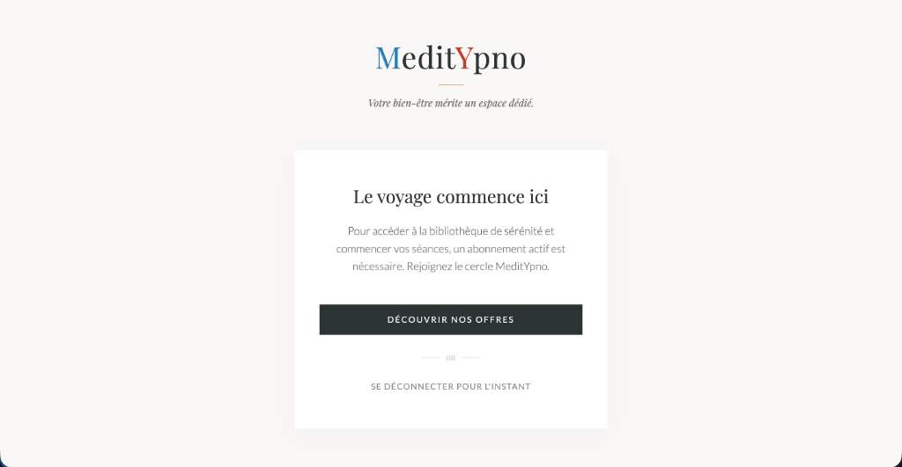
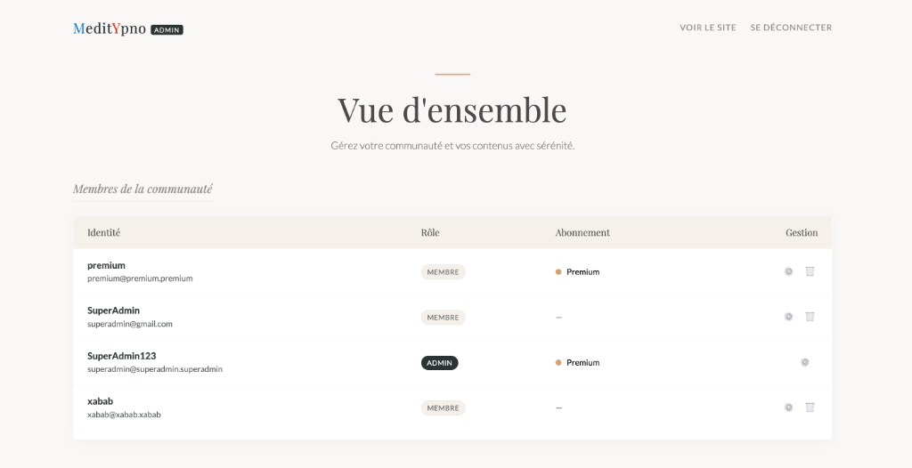

Janvier 2026 -
Février 2026
Plateforme VOD Ermes
Conception et déploiement d'une plateforme de streaming vidéo sécurisée (Netflix-like), incluant une API de transcodage automatisé et un modèle d'abonnements.
Vue.js 3
Node.js
Docker
FFmpeg
HLS Streaming
VPS OVH

Interface Abonnés (Netflix-style)

Authentification Sécurisée

Paywall & Gestion d'Abonnement
